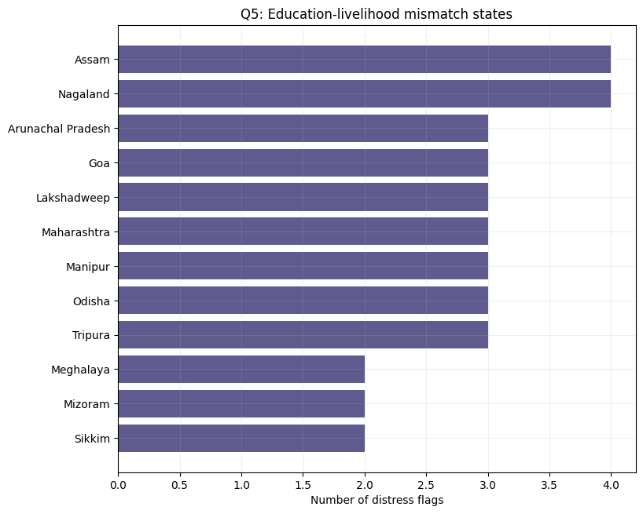

When Schooling Does Not Become Security
A data-driven policy analysis of Scheduled Tribe education, poverty, employment, dropout, and livelihood distress across high-ST states in India.
Introduction
Scheduled Tribes constitute approximately 8.6 percent of India's population and are among the most constitutionally protected groups in the country. The Fifth and Sixth Schedules of the Constitution, along with the Tribes Advisory Councils and the PESA Act, reflect a longstanding policy recognition that ST communities face structural disadvantages that cannot be addressed through general welfare programmes alone. Over the decades since Independence, dedicated interventions such as tribal sub-plans, post-matric scholarships, residential school schemes, and special provisions under MGNREG have attempted to close the gap between ST and non-ST populations on education, employment, and poverty.
The data suggests that some progress has been made. ST literacy rates have risen steadily across most states, and gross enrolment ratios in primary and upper-primary schooling have expanded significantly. Yet improvements in these headline education indicators have not uniformly translated into better livelihood outcomes. Secondary dropout among ST students remains high in several states, poverty rates among ST households continue to far exceed national averages in many regions, and work participation rates in some high-ST states remain depressed despite years of education investment. The question of why schooling is not producing the economic security it is assumed to generate is both analytically important and urgently policy-relevant.
This project approaches that question through an exploratory data analysis of publicly available education, employment, poverty, and livelihood indicators across states with significant ST populations. Rather than assuming that educational inputs automatically produce livelihood outcomes, the analysis tests those relationships directly. It examines which education indicators are most closely associated with poverty and employment outcomes, where the mismatches between schooling and livelihoods are most acute, and what the data can tell us about the specific interventions that states may need.
Problem Statement
The main problem addressed in this project is that better educational access does not always lead to better economic outcomes for Scheduled Tribe populations. States may show improvement in enrolment or literacy, but still face high dropout, poverty, weak employment outcomes, or dependence on public employment schemes.
Therefore, the project asks:
How do educational outcomes among Scheduled Tribe populations relate to employment, poverty, and livelihood distress across high-ST states in India?
Analysis and Results
Q1. How do ST literacy and literacy gaps describe long-term educational exclusion?
This question examines two literacy indicators — the absolute ST literacy rate and the male-female literacy gap within ST populations — and asks how useful they are for describing educational exclusion. The correlations test both indicators against work participation, labour force participation, unemployment, and ST poverty across high-ST states. The overall result is that literacy indicators are better read as historical accumulation markers than as current predictors of livelihood outcomes. Neither indicator produces a strong, clean correlation with employment or poverty, but together they describe the shape of long-run exclusion in a way that no single current schooling metric can.
1. ST literacy rate and work participation

The scatter of ST literacy rate against WPR shows a loose positive trend. States with higher ST literacy tend to have somewhat higher work participation rates, but the spread around the fitted line is wide enough that literacy rate alone explains very little of the variation in WPR. Mizoram and Nagaland sit toward the higher end of ST literacy with relatively stronger WPR, while states like Madhya Pradesh and Rajasthan cluster at the lower-literacy end with weaker work participation. However, the pattern is not consistent enough to treat literacy as a reliable predictor. The relationship is plausible in direction but shallow in strength, which already signals that literacy is proxying something deeper rather than directly driving employment outcomes.
2. Literacy gap and work participation

The scatter of literacy gap against WPR runs in the expected negative direction — states where the male-female ST literacy gap is larger tend to have lower work participation — but again the relationship is too scattered to be treated causally. Rajasthan and Madhya Pradesh appear at the high-gap end with weak WPR, while North-Eastern states with smaller internal literacy gaps tend to show higher WPR. The key interpretive point is that neither the literacy rate nor the literacy gap is causing these WPR differences directly. Both are outcomes of the same underlying structural history: decades of differential access to schooling, administrative reach, and economic integration that shaped both who became literate and who found stable employment. The literacy gap is the more diagnostic of the two because it captures relative exclusion within the ST population itself — a state could have moderate overall ST literacy while still having left women far behind.
3. ST literacy rate and ST poverty

The scatter of ST literacy rate against ST poverty shows the expected negative direction — higher literacy is loosely associated with lower poverty — but the relationship is noisy and the small poverty sample limits what can be inferred. Odisha and Madhya Pradesh appear at the low-literacy, high-poverty corner, while some North-Eastern states are positioned toward lower poverty. However, the data points scatter considerably around the fitted line. This confirms that literacy cannot be used as a standalone welfare indicator. Several states with moderate or improving literacy still face substantial poverty, which means the factors that determine poverty are not captured by literacy alone.
4. Literacy gap and ST poverty

The scatter of literacy gap against ST poverty shows a positive direction — states where the male-female literacy gap is wider also tend to have higher poverty — but again the correlation is modest and the sample is small. Odisha is the clearest high-gap, high-poverty case, while Jammu and Kashmir shows a relatively large gap alongside moderate poverty. The literacy gap is capturing something beyond the literacy rate in this relationship: even where the overall ST literacy level is not the very lowest, if women have been systematically excluded from literacy within the ST community, poverty tends to be higher. This reinforces the idea that gender-differentiated exclusion compounds economic disadvantage in a way that aggregate literacy averages conceal.
Q1 interpretation
Taken together, the four scatters confirm that ST literacy and the literacy gap are best treated as long-run exclusion indicators rather than as direct predictors of current employment or poverty. The correlations are directionally sensible but weak enough in strength that literacy should never be used as a substitute for GER or dropout in assessing the current schooling pipeline. The literacy gap's most important contribution is that it reveals differential exclusion within an already-disadvantaged group. For policy, this means that states with moderate overall ST literacy should not be assumed to have achieved equity — if the internal gender literacy gap is large, women have been left behind even as aggregate numbers improved.
Takeaway: ST literacy describes accumulated educational exclusion over decades, not a current lever for employment or poverty outcomes. The literacy gap adds a gender equity dimension that the aggregate rate obscures. Both should inform long-run policy targeting, while GER and dropout handle the current schooling pipeline.
Q2. Do states with stronger ST schooling participation, measured by GER, also have lower dropout and lower ST poverty?
This question examines whether stronger schooling participation among Scheduled Tribe students is associated with two expected outcomes: lower dropout and lower ST poverty. The results show a mixed picture. GER is useful for measuring schooling access, but it does not automatically indicate educational success or livelihood security. The more important policy signal appears to be retention: whether students stay in school long enough to progress from elementary to secondary education.
Overall, the findings suggest that stronger schooling participation is linked with lower dropout around the transition into secondary school, especially for girls. However, GER does not clearly translate into lower ST poverty. In fact, some of the poverty results are counter-intuitive, showing that high enrolment can coexist with high poverty.
1. GER I–VIII and ST poverty

The first result is the most counter-intuitive. GER I–VIII has a strong positive relationship with ST poverty in the available poverty sample. Normally, we might expect higher enrolment to be associated with lower poverty. However, the graph shows that states with higher GER I–VIII also tend to have higher ST poverty.
This does not mean that schooling causes poverty. Instead, it shows that GER should not be interpreted as a welfare indicator by itself. GER is a gross enrolment measure, so it can be high because of over-age enrolment, delayed progression, repeat enrolment, late entry into school, or targeted schooling expansion in poorer regions. In other words, a state can have many students enrolled while still struggling with poverty, poor progression, and weak livelihood outcomes.
States such as Odisha, Madhya Pradesh, Jharkhand, Maharashtra, and Chhattisgarh show relatively high poverty despite high or moderate GER. This suggests that access to school is not enough. The key question is whether students are progressing smoothly and whether schooling eventually improves economic security.
2. Secondary dropout and ST poverty

The relationship between secondary dropout and ST poverty is more policy-relevant than the relationship between GER and poverty. The graph shows that states with higher secondary dropout tend to also have higher ST poverty. The result is not statistically conclusive because the poverty data is available for only nine states, but the direction is important.
Dropout is a retention indicator. Unlike GER, which tells us whether students are enrolled, dropout tells us whether students are leaving the school system before completing important stages of education. This makes dropout a sharper signal of educational failure.
Odisha is the clearest example: it has both very high secondary dropout and very high ST poverty. Madhya Pradesh and Maharashtra also show high dropout along with high poverty. Jammu and Kashmir is an exception, with relatively low ST poverty despite moderate dropout. These differences show that dropout is not the only explanation for poverty, but it is still a stronger warning signal than enrolment alone.
3. Secondary GER IX–X and upper-primary dropout

This graph should be read as a transition-stage result. It does not compare enrolment and dropout within the exact same class group. Instead, it compares secondary GER IX–X with upper-primary dropout. Since upper-primary covers Classes VI–VIII, this relationship tells us something about the transition from upper-primary into secondary schooling.
The negative relationship suggests that states with stronger secondary participation tend to have lower dropout before students reach secondary school. This makes sense: if many students are dropping out in Classes VI–VIII, fewer students will be visible in Classes IX–X. Therefore, secondary GER partly reflects whether students are successfully moving through the earlier schooling pipeline.
The result is suggestive rather than definitive because the p-value is slightly above 0.05. Still, it supports an important policy point: improving secondary participation requires attention to earlier dropout. States cannot improve secondary enrolment only by focusing on Classes IX–X; they also need to strengthen retention before students reach that stage.
4. Girls’ secondary GER IX–X and upper-primary dropout

The girls’ secondary GER result is stronger than the overall secondary GER result. States with higher girls’ GER in Classes IX–X tend to have lower upper-primary dropout. This suggests that girls’ progression into secondary education is especially sensitive to whether students are retained through Classes VI–VIII.
This finding is important because girls’ secondary participation is not just a gender indicator. It may also reflect broader schooling conditions such as safety, transport, household support, scholarship access, school availability, and social acceptance of girls continuing education beyond the elementary stage.
The result supports the idea that gender-sensitive education policy should focus not only on enrolment at the secondary level, but also on preventing dropout before secondary school. If girls leave during the upper-primary stage, they never appear in secondary GER in the first place.
5. Gender parity indicators: useful, but not sufficient

The gender parity result needs careful interpretation. A higher GPI means that girls’ enrolment is closer to, or sometimes higher than, boys’ enrolment. However, the graph shows that higher secondary GPI can coexist with higher ST poverty. This does not mean that gender parity causes poverty. Rather, it shows that gender parity in enrolment is not the same as economic empowerment.
A state can have gender-balanced enrolment and still face high ST poverty if overall education quality is weak, labour markets are limited, school completion is poor, or education does not translate into work opportunities. GPI is therefore useful, but it should be read alongside actual enrolment levels, dropout, poverty, and employment indicators.

The secondary GER IX–X GPI relationship with upper-primary dropout is weak. This shows why GPI alone is less informative than girls’ GER itself. A state can have a good GPI either because both boys and girls are doing well, or because both are doing poorly. For this reason, the girls’ GER graph provides a clearer signal than the GPI graph.
Q2 interpretation
Taken together, the results show that stronger ST schooling participation is only partly associated with better outcomes. On the dropout side, there is evidence that stronger secondary participation is linked with lower dropout before the transition into secondary school. This relationship is especially clear for girls’ secondary GER.
On the poverty side, however, the relationship is not straightforward. GER does not clearly correspond to lower ST poverty. In fact, GER I–VIII is positively associated with ST poverty in the available sample. This shows that enrolment indicators can look strong even when welfare outcomes remain weak.
The main policy lesson is that enrolment alone should not be treated as educational success. A stronger education system is one where ST students not only enter school, but also progress through upper-primary, reach secondary education, avoid dropout, and eventually gain better livelihood opportunities.
Takeaway: GER captures schooling access, but dropout captures schooling failure more directly. For high-ST states, retention and progression are stronger policy signals than enrolment alone.
Q3. Are enrolment and GER enough to indicate educational progress, or do dropout rates tell a different story?
This question directly tests whether GER — as the dominant administrative metric of schooling participation — is sufficient to assess educational progress among ST students, or whether secondary dropout reveals a separate and more urgent failure. GER indicators for classes I–VIII and IX–XII, the latest GER IX–XII average, girls' GER, and the GER Gender Parity Index were all correlated against secondary dropout, WPR, and ST poverty. The central finding is that GER and dropout measure fundamentally different things, and they do not substitute for each other. A state can record strong GER while simultaneously losing students before secondary completion, because the infrastructure required for enrolment and the infrastructure required for retention are not the same thing.
1. GER IX–XII and secondary dropout

The scatter of GER IX–XII against secondary dropout produces a near-zero correlation. There is no systematic pattern: high-GER states are not reliably the states with lower dropout, and low-GER states are not confined to high-dropout outcomes. States that appear in the high-GER-but-high-dropout quadrant are not statistical anomalies — they reflect what happens when enrolment campaigns, conditional transfers, and age-relaxed admissions bring students into the system without building the school quality, proximity, teacher presence, and household economic support that keep students there. The near-zero correlation is therefore itself informative: it confirms that GER is measuring access entry, not completion.
2. Latest GER IX–XII average and secondary dropout

Using the more recent and refined GER IX–XII average produces the same result. The scatter shows no meaningful slope, and the state-level positions are broadly similar to the historical GER picture. This consistency across GER versions confirms that the finding is not an artefact of data vintage or definition. States like Maharashtra and Odisha appear at notable dropout levels despite GER values that do not flag them as access-deficient. The latest GER average is the most policy-relevant version of the enrolment indicator, and even it cannot identify where retention is failing.
3. GER Gender Parity Index and secondary dropout

The GPI scatter against secondary dropout is particularly important for understanding what parity in enrolment does and does not tell us. A GPI close to one means girls and boys are enrolling at similar rates. But states with GPI near parity still span a wide range of dropout outcomes. This is because GPI tells us whether girls are present in the enrolment count, not whether they or their male peers are completing the secondary stage. A state can achieve enrolment parity and still lose large shares of both girls and boys before secondary completion, simply because the barriers to retention operate at the household and school-quality level rather than at the point of initial enrolment.
4. Official GPI IX–XII and secondary dropout

The official GPI IX–XII average against secondary dropout shows a similarly weak pattern. The slope is not meaningfully negative, and states with high official GPI values appear at varying dropout levels. Meghalaya stands out as a state with relatively high dropout despite a comparatively small literacy gap and reasonable GPI. This exception is instructive: gender parity in enrolment does not guarantee that students of either gender are being retained. It simply means that whatever barriers exist are applied roughly equally to boys and girls at the point of entry.
5. GER IX–XII and work participation

The scatter of GER IX–XII against WPR shows that stronger secondary enrolment does not reliably correspond to stronger work participation. States in the high-GER-but-low-WPR cluster are the clearest evidence that even if the enrolment signal looks reasonable, labour market integration may still be weak. This connects directly to the mismatch argument developed in Q5: schooling access can improve without producing the livelihood outcomes that justify the investment. GER improvement without labour market connection produces a population that has been in school but has not been equipped or positioned for formal employment.
6. Primary enrolment and secondary dropout

The scatter of total primary ST enrolment against secondary dropout shows almost no informative pattern. Raw enrolment totals at the primary level are heavily influenced by state size and ST population scale, making them poor cross-state comparators. More importantly, primary enrolment says nothing about whether students are progressing through upper-primary into secondary schooling. A large primary enrolment base can coexist with severe attrition at the transition stages, which is precisely what high secondary dropout captures. This result reinforces that quantity of entry-level enrolment is not a proxy for quality of progression.
Q3 interpretation
GER is a politically visible, administratively easy indicator that dominates policy tracking partly because it is reliably collectable and flattering to report. Dropout at the secondary level is harder to measure, less flattering to acknowledge, and more revealing of structural failure. The six scatters collectively establish that no version of GER — whether historical, recent, overall, girls-specific, or gender-parity-adjusted — reliably identifies where ST students are being lost before secondary completion. States that monitor only GER will systematically overestimate their educational progress and underinvest in retention.
The high-GER-but-high-dropout states are not contradictions — they are the natural product of treating access and retention as the same policy problem when they require different interventions entirely.
Takeaway: GER captures access entry; dropout captures system failure. No version of GER reliably predicts where retention is breaking down. Policy that monitors only enrolment will miss the states where students are being lost, which are often the same states where poverty and weak WPR are also elevated.
Q4. Does the ST literacy gap matter more than the ST literacy level?
This question compares two ways of understanding educational disadvantage among Scheduled Tribe populations. The first is the absolute ST literacy rate, which tells us how literate the ST population is within a state. The second is the literacy gap, which measures how far ST literacy falls behind the broader state population.
The distinction matters because a state can have a moderate or even high ST literacy rate but still have a large gap between ST communities and the rest of the population. In that case, the problem is not only low literacy, but unequal educational progress. This makes the literacy gap a useful indicator of relative exclusion.
1. Literacy gap and secondary dropout

The strongest direct finding in this section is that states with larger ST literacy gaps tend to have higher secondary dropout. The relationship is moderate and statistically meaningful, with a Pearson correlation of 0.5099 and a p-value of 0.0306. This means that relative educational disadvantage is not only visible in literacy outcomes, but also appears to be connected with students leaving school at the secondary stage.
Odisha is the clearest high-risk case in this graph. It has both a very large literacy gap and very high secondary dropout. Gujarat, Maharashtra, Madhya Pradesh, and Jammu and Kashmir also appear on the higher-gap side of the graph, showing that the literacy gap can help identify states where ST communities are lagging behind in a deeper structural sense.
However, the relationship is not perfect. Meghalaya has high secondary dropout despite a very small literacy gap, while Goa has a relatively large literacy gap but low secondary dropout. These exceptions show that literacy gap is important, but it should not be used alone. It should be read alongside dropout, poverty, employment, gender indicators, and state-specific context.
2. ST literacy level and literacy gap together

The quadrant plot is useful because it shows that ST education disadvantage has two dimensions: absolute literacy and relative inequality. States in the lower-literacy and higher-gap quadrant face compound education disadvantage. These are states where ST literacy is low and the gap from the broader population is also large.
Odisha, Madhya Pradesh, Jammu and Kashmir, Rajasthan, Gujarat, Maharashtra, Chhattisgarh, and Jharkhand are important concern cases because they have relatively low ST literacy, large literacy gaps, or both. Odisha and Madhya Pradesh are especially serious because they combine low ST literacy with very large gaps.
States such as Mizoram, Lakshadweep, Sikkim, Manipur, Nagaland, Assam, and Meghalaya appear in a comparatively better position because they have higher ST literacy and smaller literacy gaps. This does not mean they have no education problems, but it suggests that their ST communities are not as far behind the broader state population on literacy.
Goa and Tripura are interesting cases because they have relatively higher ST literacy but still show a noticeable literacy gap. These states can be interpreted as hidden-exclusion cases: the absolute level of ST literacy may look acceptable, but ST communities still lag behind the general population.
3. Which matters more: ST literacy level or literacy gap?

The comparison chart shows that the literacy gap is often a stronger predictor than the ST literacy rate. For ST poverty, the literacy gap has a stronger relationship than the ST literacy level, although the poverty sample is small and the relationship is not statistically strong. For work participation, the literacy gap also has a stronger association than the ST literacy rate.
For the employment PU indicator, the ST literacy rate is the stronger predictor. This suggests that absolute literacy still matters for some employment outcomes. In other words, the analysis should not replace literacy level with literacy gap. Both are useful, but they tell us different things.
For secondary dropout, the literacy gap is only slightly stronger than the ST literacy rate. The correlation with literacy gap is 0.5099, while the runner-up absolute correlation for ST literacy rate is 0.5051. This means both measures are relevant for dropout, but the gap has a small advantage because it captures relative educational exclusion.
Q4 interpretation
The results suggest that the literacy gap is a better policy signal than ST literacy level alone. ST literacy tells us whether a community has reached a basic educational threshold, but the literacy gap tells us whether ST communities are falling behind the rest of the state. This relative disadvantage matters because it can reveal exclusion even in states where the absolute literacy rate does not look extremely low.
The positive relationship between literacy gap and secondary dropout is especially important. It suggests that states where ST communities are further behind in literacy also tend to lose more students at the secondary stage. This supports the idea that dropout is not only a schooling access problem, but also a deeper inequality problem.
At the same time, the analysis should not ignore absolute ST literacy. Some states have low ST literacy and large gaps at the same time, making them compound-disadvantage states. These states require stronger foundational literacy support, remedial learning, and targeted retention policies.
Takeaway: ST literacy level shows the absolute education condition, but the literacy gap shows relative exclusion. For policy targeting, the literacy gap is often the sharper indicator because it reveals whether ST communities are being left behind within their own states.
Q5. Are there states where educational indicators look reasonable, but employment or poverty outcomes remain weak?
This question builds a structured mismatch classification. Each state is assessed against median thresholds on ST literacy and GER to determine whether its education indicators look reasonable, and then flagged across five livelihood distress dimensions: low WPR, high unemployment, high poverty, high MGNREG unmet demand, and high MGNREG 100-plus-days. States clearing the education threshold but carrying two or more distress flags are identified as education-livelihood mismatch states. The mismatch bar chart ranks these states by the number of distress flags they carry.
1. States with the highest distress flag counts

The bar chart reveals that several states with education indicators that are not the weakest in the sample still accumulate multiple simultaneous livelihood distress flags. States from the North-East — including Assam, Nagaland, Arunachal Pradesh, and Tripura — appear prominently. These states are not in the lowest tier on ST literacy or GER, yet they flag simultaneously on weak WPR, high MGNREG unmet demand, and in some cases high unemployment. The visual ranking makes clear that the problem is not uniformly distributed: some states carry three or more distress flags, indicating compound livelihood vulnerability that coexists with comparatively acceptable education indicators.
Q5 interpretation
The mismatch classification is a descriptive exercise based on median thresholds, not a causal model, and that distinction matters enormously for how the results should be read. These states should not be interpreted as places where education investment has failed. The more plausible reading is that the constraints on livelihood outcomes in mismatch states are operating primarily on the demand side of the labour market: thin formal employment sectors, geographic isolation, heavy dependence on subsistence agriculture, and weak integration with wider economic networks. Education improves a person's readiness to participate in a formal economy, but it cannot create that economy where it does not structurally exist.
Credentialing a population without a corresponding labour market to absorb it produces underemployment and continued MGNREG dependence regardless of schooling levels. The mismatch states are therefore an argument for complementary economic development investment alongside education policy, not an argument against education investment itself.
Takeaway: Several states with reasonable education indicators still carry multiple livelihood distress flags simultaneously. These education-livelihood mismatch states need labour market and economic development interventions alongside education support — policies designed only around school access or dropout reduction will not resolve the structural demand-side constraints that are suppressing livelihood outcomes.
Q6. Does MGNREG unmet demand reflect deeper livelihood distress among ST households?
This question examines whether MGNREG-related indicators reveal deeper livelihood distress among Scheduled Tribe households. The analysis uses two MGNREG measures: households receiving 100-plus days of work per 1000, and households who sought work but did not receive it per 1000. The second measure, unmet demand, is the stronger distress indicator because it captures households that needed work but were unable to access it.
The results show that MGNREG unmet demand is closely associated with other signs of disadvantage. States with higher unmet demand tend to have higher secondary dropout, lower ST literacy, and higher ST poverty. In contrast, the 100-plus-days measure has a much weaker relationship with dropout. This suggests that the problem is not simply public-work dependence, but unfulfilled demand for work.
1. Which states have the highest MGNREG unmet demand?

The unmet demand ranking shows where ST households are most likely to report seeking MGNREG work but not receiving it. This is an important livelihood-distress indicator because it captures a gap between need and actual access to public employment.
Arunachal Pradesh and Assam appear at the top of the ranking, followed by Odisha, Jharkhand, Madhya Pradesh, Chhattisgarh, Dadra and Nagar Haveli and Daman and Diu, and Maharashtra. These states should be read as places where the demand for wage work is high, but the work-provision mechanism may not be fully meeting household need.
This graph is useful because it shifts the focus away from only poverty or dropout. It shows that livelihood distress can also be visible through public employment demand. If households seek work but do not receive it, that may indicate income insecurity, weak local labour markets, or implementation gaps in work provision.
2. MGNREG unmet demand and ST poverty

The strongest poverty-related result is the positive relationship between MGNREG unmet demand and ST poverty. States with higher ST poverty tend to also have more households reporting that they sought but did not receive MGNREG work. The correlation is strong, although the p-value is slightly above 0.05 because poverty data is available for only nine states.
Odisha is the clearest high-distress case: it has both very high ST poverty and high MGNREG unmet demand. Madhya Pradesh, Chhattisgarh, Jharkhand, and Maharashtra also sit in the high-poverty and high-unmet-demand cluster. This suggests that unmet demand is capturing genuine livelihood vulnerability rather than being a random administrative statistic.
Assam is an important exception. It has high unmet demand but comparatively lower ST poverty in this sample. This shows that MGNREG unmet demand should not be treated as identical to poverty. Instead, it should be treated as a complementary distress indicator that can reveal pressure in the rural labour market even where poverty estimates are lower.
3. MGNREG unmet demand and secondary dropout

MGNREG unmet demand is also positively associated with secondary dropout. States where more ST households seek but do not receive work tend to have higher secondary dropout. This relationship is statistically meaningful, with a p-value of 0.0252.
This result is important because it connects livelihood distress with school retention. If households face economic pressure, students may be more likely to leave school, either because of direct costs, opportunity costs, household labour needs, migration, or weak expectations that schooling will lead to better work. The graph does not prove causality, but it shows that livelihood distress and educational retention problems cluster in the same states.
Odisha again stands out as a serious concern case, with both high unmet demand and very high secondary dropout. Maharashtra, Gujarat, Madhya Pradesh, Meghalaya, and Nagaland also show notable dropout levels alongside moderate to high unmet demand. This supports the broader project argument that education and livelihood outcomes should be studied together rather than separately.
4. MGNREG unmet demand and ST literacy

The relationship between unmet demand and ST literacy is negative. This means that states with higher MGNREG unmet demand tend to have lower ST literacy. This is one of the strongest Q6 results because it links livelihood distress directly with weaker educational foundations.
Odisha, Madhya Pradesh, Jharkhand, Chhattisgarh, Rajasthan, and Jammu and Kashmir fall toward the lower-literacy side of the graph. Many of these states also show moderate to high unmet demand. This suggests that weaker educational foundations and livelihood vulnerability may reinforce each other.
However, there are exceptions. Assam and Arunachal Pradesh have high unmet demand despite higher ST literacy than some other states. This means that literacy is not the only factor shaping livelihood distress. Local labour markets, implementation capacity, geography, and state-level employment conditions may also matter.
5. 100-plus-days employment among ST households

The 100-plus-days measure tells a different story from unmet demand. Mizoram is a major outlier, while most other states show very low levels of 100-plus-days employment per 1000 households. This suggests that the measure is not capturing distress in the same way as sought-not-received demand.
Receiving 100-plus days of work can mean that households are heavily dependent on public employment, but it can also mean that the scheme is functioning and work is actually being provided. For that reason, this indicator is harder to interpret as pure distress. It may reflect both need and implementation capacity.
6. 100-plus-days employment and secondary dropout

The 100-plus-days measure has almost no relationship with secondary dropout. The correlation is close to zero, and the p-value is very high. This means that heavier receipt of 100-plus-days employment does not clearly line up with higher or lower dropout across the high-ST states.
This contrast is important. It shows that not all MGNREG indicators capture the same kind of distress. The number of households receiving 100-plus days of work is not strongly linked with school retention problems. But unmet demand, or seeking work and not receiving it, is linked with dropout, literacy, and poverty.
Q6 interpretation
Taken together, the Q6 results show that MGNREG unmet demand is a strong livelihood-distress signal among ST households. It is positively associated with secondary dropout and ST poverty, and negatively associated with ST literacy. This suggests that states where households face unfulfilled demand for public work also tend to face weaker education and livelihood outcomes.
The key distinction is between receiving work and not receiving work. The 100-plus-days measure does not show a meaningful relationship with dropout, partly because receiving many days of work may reflect both household need and effective implementation. In contrast, unmet demand more directly captures vulnerability because it represents households who asked for work but did not get it.
The policy implication is that MGNREG should be read not only as an employment scheme, but also as a diagnostic indicator. High unmet demand may reveal areas where ST households face income insecurity, weak local employment options, or implementation gaps in access to public work. These same areas may also need stronger education-retention support, especially at the secondary level.
Takeaway: MGNREG unmet demand reflects deeper livelihood distress more clearly than 100-plus-days employment. Where ST households seek but do not receive work, states also tend to show higher dropout, lower literacy, and higher poverty.
Q7. Are scholarship-supported states seeing lower secondary dropout among ST students?
This question tests whether states receiving higher ST scholarship funding are also the states with lower secondary dropout. The analysis uses scholarship release and utilization data from 2023–24 alongside cumulative release over 2019–24, normalizing for ST population size to allow fair cross-state comparison. The three scatters examine per-capita scholarship release against dropout, scholarship utilization rate against dropout, and cumulative scholarship release against poverty.
1. Per-capita scholarship release and secondary dropout

The scatter of 2023–24 scholarship release per 100,000 ST population against secondary dropout does not show the expected negative relationship. The slope is weak or slightly positive, meaning that states receiving more scholarship funding per ST person are not systematically the states with the lowest dropout. Some high-release states still appear at elevated dropout levels, while some lower-release states show better retention. The temptation is to conclude that scholarships do not work, but that inference is not valid. The more likely explanation is a classic confounding-by-targeting problem: scholarship allocations are deliberately directed toward higher-need, higher-dropout states, which mechanically produces a flat or positive association between funding and dropout even if scholarships are genuinely helping at the margin within those states. Cross-sectional correlations across states cannot recover what is essentially a within-state treatment effect.
2. Scholarship utilization rate and secondary dropout

The scatter of scholarship utilization rate — the percentage of released funds actually used — against secondary dropout is the more actionable finding. Utilization rate is not subject to the targeting confound in the same way that release levels are. Where states have received substantial scholarship allocations but still show low utilization, the problem is not funding shortage; it is delivery failure. Low utilization can reflect awareness gaps among eligible students, administrative friction in application and disbursement processes, conditionality barriers that exclude some students, or delays that make funding arrive too late to prevent dropout. These are administrative and process problems that additional fund release will not fix. States in this category need process reform and last-mile delivery improvements rather than larger allocations.
3. Cumulative scholarship release and ST poverty

The scatter of cumulative scholarship release over 2019–24 per 100,000 ST population against ST poverty again shows no consistent negative association. Some high-cumulative-release states still appear at high poverty levels. This confirms that sustained scholarship investment does not automatically translate into poverty reduction, which is not surprising given the structural gap between financial support for individual students and the broader household and labour market conditions that govern poverty. Scholarships address the direct cost barrier to schooling; they do not address school quality, teacher absence, household opportunity costs, early marriage, labour demand pulling students out of school, or the absence of formal employment opportunities after completion.
Q7 interpretation
The scholarship findings should not be read as evidence against the intervention. They demonstrate instead the analytical limits of cross-sectional correlations when the treatment is concentrated where the problem is worst. The utilization gap — the space between funds released and funds actually reaching students — is the most actionable signal in this section. It is independent of the targeting confound and directly reveals where administrative delivery is failing.
The deeper lesson is that financial support is one necessary component of a retention strategy, not a sufficient one. Dropout is driven by school quality, household economic insecurity, teacher presence, perceived returns to education, and social norms — none of which scholarship release directly addresses. States with high release and low utilization need process reform; states with high dropout and low release may need both funding and a broader retention package.
Takeaway: The absence of a negative correlation between scholarship release and dropout is not evidence that scholarships are ineffective — it reflects confounding-by-targeting. The actionable finding is the utilization gap: where funding is released but not reaching students, administrative reform is needed. Financial support alone, without complementary retention infrastructure, will not resolve dropout.
Q8. Do states with high ST schooling participation still depend heavily on MGNREG?
This question tests whether stronger ST schooling participation is enough to reduce dependence on MGNREG-related livelihood support. The analysis uses latest secondary GER for Classes IX-X as the schooling participation indicator and compares it with three MGNREG indicators: average days worked, 100-plus-days work, and unmet demand measured as households that sought work but did not receive it.
The overall result is mixed. Higher secondary GER does not consistently correspond to lower MGNREG dependence or lower MGNREG unmet demand. Some states with high schooling participation still show heavy MGNREG use or high unmet demand. This suggests that school participation and livelihood security do not always improve together. The strongest signal in this question comes not from GER, but from secondary dropout: states with higher dropout also tend to report higher unmet MGNREG demand.
1. Highest average MGNREG days worked

The average-days-worked indicator shows the broad level of MGNREG use among households. Rajasthan and Mizoram stand out as the highest, followed by Sikkim, Tripura, Manipur, Lakshadweep, Arunachal Pradesh, Meghalaya, Nagaland, and Chhattisgarh.
This indicator should be interpreted carefully. High average days worked may reflect livelihood dependence, but it can also mean that the scheme is functioning and that households are actually receiving work. Therefore, average days worked is useful for identifying MGNREG reliance, but it is not always a pure distress indicator.
2. Highest MGNREG unmet demand

Unmet demand is a sharper livelihood-distress measure than average days worked because it captures households that sought MGNREG work but did not receive it. Arunachal Pradesh and Assam show the highest unmet demand, followed by Odisha, Jharkhand, Madhya Pradesh, Chhattisgarh, Dadra and Nagar Haveli and Daman and Diu, Maharashtra, Nagaland, and Meghalaya.
This ranking suggests that livelihood stress is not only about whether households use MGNREG, but also whether the demand for work is being met. A state can have high need for public employment but still fail to provide enough work to households that ask for it.
3. Latest secondary GER IX-X and MGNREG 100-plus-days

This graph shows a moderate positive relationship between latest secondary GER IX-X and the number of households receiving 100-plus days of MGNREG work. This is important because it goes against the simple expectation that higher schooling participation should automatically reduce dependence on public employment.
Mizoram is the clearest outlier: it has very high secondary GER and also the highest 100-plus-days value. Rajasthan and Madhya Pradesh also contribute to the positive slope. However, many states cluster close to zero on the 100-plus-days measure, so this result should be interpreted cautiously.
The correct interpretation is not that higher schooling causes more MGNREG dependence. Rather, the graph shows that high schooling participation can coexist with heavy public-work reliance in some states. This supports the broader mismatch argument: schooling participation may improve without fully removing household dependence on employment support.
4. Latest secondary GER IX-X and average MGNREG days worked

When MGNREG dependence is measured using average days worked, the relationship with secondary GER becomes weak. The correlation is small and statistically insignificant. This means that states with higher secondary GER do not consistently show either higher or lower average MGNREG days worked.
This weak relationship is useful because it tempers the 100-plus-days result. While a few states show high GER and high 100-plus-days employment, the broader average-days measure does not show a strong pattern. Schooling participation and average public-work use are therefore only loosely connected.
This supports the main Q8 argument: higher ST schooling participation does not guarantee lower livelihood dependence, but it also does not have a simple one-direction relationship with MGNREG use.
5. Latest secondary GER IX-X and MGNREG unmet demand

This graph directly tests whether stronger schooling participation is associated with lower livelihood distress. If secondary schooling participation were enough to reduce household distress, we would expect a clear negative relationship between GER and unmet MGNREG demand. The data does not show that pattern.
The relationship is weak and statistically insignificant. Some high-GER states still show high unmet demand. Assam, Odisha, and Maharashtra are important examples because they have relatively high secondary GER but also high sought-not-received demand. Mizoram, on the other hand, has very high GER and low unmet demand, showing that the pattern varies sharply across states.
This is one of the clearest pieces of evidence for the mismatch argument. Higher schooling participation does not automatically mean that households face less employment insecurity. Education access may improve, but local labour markets, household income insecurity, and public employment access can remain weak.
6. Secondary dropout and MGNREG unmet demand

This is the clearest Q8 result. Unlike secondary GER, secondary dropout has a meaningful positive relationship with MGNREG unmet demand. States with higher secondary dropout tend to report more households seeking but not receiving MGNREG work.
This suggests that livelihood distress is more closely connected to retention failure than to enrolment alone. GER tells us whether students are participating in school, but dropout tells us whether students are being lost from the system. When dropout is high and unmet work demand is also high, it points to a deeper education-livelihood problem.
Odisha, Madhya Pradesh, Maharashtra, Jharkhand, Chhattisgarh, Assam, and Arunachal Pradesh appear as important concern cases because they show high unmet demand and/or high dropout. These states suggest that schooling and livelihood policy should be connected rather than treated as separate issues.
Q8 interpretation
The Q8 results show that high ST schooling participation does not automatically mean low MGNREG dependence. Secondary GER has only weak relationships with average MGNREG days worked and unmet MGNREG demand. The only stronger GER-related result is with 100-plus-days employment, but that relationship is influenced by a few standout states and should not be interpreted causally.
The stronger and more meaningful relationship is between secondary dropout and MGNREG unmet demand. This suggests that the real issue is not simply whether students are enrolled, but whether they are retained in school while households also gain livelihood security. Where households continue to face unmet demand for work, students may remain more vulnerable to dropping out.
Therefore, Q8 supports the broader project argument: education indicators must be interpreted alongside livelihood indicators. A state may show relatively strong schooling participation and still have households that depend heavily on MGNREG or cannot access the work they seek.
Takeaway: High ST schooling participation does not automatically imply low MGNREG dependence. The clearest warning signal is not GER, but the combination of secondary dropout and unmet demand for work.
Q9. Does gender parity in enrolment translate into better female literacy and work outcomes?
This question tests whether GPI values at the secondary level — where a score near one indicates near-equal enrolment between girls and boys — correspond to better outcomes for ST women: higher female literacy, stronger female WPR, and fewer low-literacy districts. It uses official GPI data alongside girls' GER IX–XII and the constructed female literacy gap, which is the difference between male and female ST literacy within each state.
1. Official GPI IX–XII and female ST literacy

The scatter of official GPI IX–XII average against female ST literacy shows a weak positive trend. States closer to parity in secondary enrolment tend to have somewhat higher female ST literacy, but the relationship is loose and several states deviate substantially from it. The weakness of this relationship is expected when the timelines are considered: current secondary GPI reflects recent enrolment conditions, while female ST literacy is a cumulative measure shaped by access patterns over multiple decades. A state that achieved enrolment parity only recently will not yet show a corresponding lift in aggregate female literacy, because literacy is measuring the attainment of the current adult population, not just the cohort currently in school. The two indicators are measuring different generations.
2. Official GPI IX–XII and female work participation

The scatter of GPI against female WPR is the more important and more cautionary finding. There is very little relationship between enrolment parity and female work participation. States with GPI values close to or above one still span a wide range of female WPR outcomes. Some near-parity states show low female WPR, which means that getting girls into secondary school at rates comparable to boys has not produced detectable improvement in their economic participation. This is not evidence that enrolling girls is unimportant — over longer time horizons it almost certainly matters — but it does mean that the mechanisms connecting schooling to labour market participation are too slow, complex, and mediated by structural factors to appear as a clean cross-sectional correlation. Female WPR is shaped by labour market norms, mobility constraints, household gender expectations, safety considerations, and the structure of available formal work — all of which operate largely independently of whether girls are currently enrolled.
3. Girls' GER IX–XII and female work participation

The scatter of girls' GER IX–XII against female WPR produces a similarly weak result. States with higher girls' secondary GER do not show reliably higher female WPR. This confirms that the failure to translate enrolment into work outcomes is not specific to GPI as a measure — it holds for the underlying girls' enrolment rate itself. The state table sorted by GPI is especially revealing: states such as Rajasthan and Jammu and Kashmir can appear with moderate GPI values while still registering low female WPR and large female literacy gaps, because the norm systems and labour market structures that exclude women from economic participation are not dismantled by enrolment alone.
Q9 interpretation
GPI improvement is a meaningful milestone in access equity, but it is a structurally shallow indicator of gender equity outcomes. It measures input — whether girls are present in school — rather than the outcomes that justify that input: literacy, economic participation, and livelihood security. The gap between enrolment parity and female WPR reveals that intervening mechanisms are doing substantial work that enrolment data cannot capture. Household expectations about women's roles, norms around female mobility and employment, and the absence of formal work opportunities compatible with women's circumstances all determine whether schooling translates into economic participation.
States reporting GPI improvement while female WPR and female literacy remain stagnant have a gendered education-to-livelihood gap. Treating GPI as a sufficient measure of gender progress will systematically understate the depth of female disadvantage that remains.
Takeaway: Near-parity enrolment for girls, measured by GPI, does not produce a detectable signal in female work participation or female literacy outcomes at the cross-state level. GPI is an access input, not an equity outcome. For genuine gender equity, policy must extend beyond enrolment to address labour market norms, post-schooling pathways, and the structural conditions that determine whether education becomes economically meaningful for women.
Q10. Does secondary dropout appear to be a stronger warning signal of poverty and weak labour outcomes than literacy alone?
This question compares two education indicators as warning signals: ST literacy and secondary dropout. ST literacy captures the absolute educational level of the ST population, while secondary dropout captures whether students are being retained in school at a later and more consequential stage. The goal is to see which of these two indicators is more closely associated with poverty, labour-market weakness, and MGNREG dependence.
The results show that secondary dropout is a stronger warning signal for ST poverty, and it is also highly relevant for MGNREG unmet demand and work participation. However, ST literacy is still important. It has a stronger relationship with unemployment and MGNREG 100-plus-days employment. Therefore, the answer is not that dropout completely replaces literacy. Rather, dropout is the sharper warning signal for welfare distress, while literacy remains important for understanding broader labour outcomes.
1. Comparing ST literacy and secondary dropout

The chart compares the absolute Pearson correlation of ST literacy and secondary dropout with five outcomes: ST poverty, work participation rate, unemployment, MGNREG unmet demand, and MGNREG 100-plus-days employment. Because the chart uses absolute correlations, it shows the strength of association, not the direction of the relationship. This is important: the graph tells us which indicator is more closely related to each outcome, but it does not by itself show whether the relationship is positive or negative.
2. ST poverty: dropout is much stronger
For ST poverty, secondary dropout is clearly the stronger warning signal. The correlation strength for dropout is about 0.53, while the correlation strength for ST literacy is only about 0.07. This means that poverty is much more closely associated with whether students leave school at the secondary stage than with the general ST literacy level alone.
This is one of the most important findings of the project. It suggests that literacy alone is too broad and slow-moving to capture current educational vulnerability. A state may have some level of ST literacy, but if students are dropping out before completing secondary education, that may reveal a more immediate connection with poverty and household distress.
3. Work participation rate: both matter, but dropout is slightly stronger
For work participation rate, secondary dropout and ST literacy are both strongly related. The correlation strength is about 0.51 for dropout and about 0.48 for ST literacy. This means that neither indicator should be ignored.
The close values suggest that labour participation is shaped by both educational stock and school retention. ST literacy captures the broad educational base of the community, while dropout captures whether younger students are continuing through the school system. The slightly stronger dropout relationship suggests that retention may be especially useful for identifying states where education and work outcomes are not aligning well.
4. Unemployment: ST literacy is stronger
For unemployment, ST literacy is the stronger predictor. The correlation strength for ST literacy is about 0.62, while secondary dropout is about 0.32. This means that unemployment appears more closely linked with the overall literacy level than with dropout alone.
This result should be interpreted carefully. A stronger relationship between literacy and unemployment does not necessarily mean literacy causes unemployment. It may reflect the fact that more literate populations are more likely to enter formal labour markets, seek work, or be counted as unemployed. It may also reflect a mismatch between education and available jobs. Therefore, this result supports the broader argument that education must connect to actual livelihood opportunities.
5. MGNREG unmet demand: both are strong warning signals
For MGNREG unmet demand, both indicators are strong. ST literacy has a correlation strength of about 0.53, while secondary dropout is very close at about 0.51. This means unmet demand for work is associated with both weaker educational conditions and school-retention problems.
This result connects Q10 back to Q6 and Q8. MGNREG unmet demand is not only an employment issue; it also overlaps with educational disadvantage. States where households seek but do not receive work may also be states where students face greater pressure to leave school. In this sense, unmet demand, dropout, and literacy should be read together as part of a wider livelihood-distress profile.
6. MGNREG 100-plus-days: literacy is stronger, dropout is weak
For MGNREG 100-plus-days employment, ST literacy is the stronger indicator. Its correlation strength is about 0.29, while the dropout correlation is only about 0.05. This means that secondary dropout has almost no relationship with 100-plus-days employment in this sample.
This supports the earlier interpretation that 100-plus-days employment is not a clean distress indicator. Receiving many days of work can reflect household need, but it can also reflect better access to the scheme or better implementation. This is why unmet demand is more useful than 100-plus-days employment for identifying livelihood distress.
Q10 interpretation
Overall, Q10 shows that secondary dropout is a powerful warning signal, especially for ST poverty. Dropout is also closely related to work participation and MGNREG unmet demand. This supports the idea that retention failure is more policy-relevant than literacy alone when the goal is to identify states facing deeper education-livelihood stress.
However, ST literacy remains important. It is stronger for unemployment and MGNREG 100-plus-days employment, and it is almost equally strong for MGNREG unmet demand. This means that literacy and dropout should not be treated as competing indicators. They capture different parts of the same problem.
ST literacy reflects the long-term educational foundation of a community. Secondary dropout reflects current failure in school progression. A state with low literacy needs foundational education support, while a state with high dropout needs retention, transition, and completion support. The strongest policy diagnosis comes from using both indicators together.
Takeaway: Secondary dropout is the sharper warning signal for ST poverty, while ST literacy remains important for broader labour-market outcomes. For policy, the best approach is to treat literacy as the foundation and dropout as the immediate alarm bell.
Q11. Do high-ST-share states systematically perform worse, or do outcomes vary substantially?
This question uses the full all-states sample rather than the high-ST subsample to test whether ST population concentration is a meaningful predictor of ST outcomes. ST share in total state population is correlated against ST literacy, secondary dropout, ST poverty, and WPR. The two scatters test whether simply knowing a state's ST concentration tells you where its outcomes will land.
1. ST population share and ST literacy

The scatter of ST share against ST literacy across all states shows a very shallow slope with high dispersion. States at similar levels of ST concentration vary enormously in ST literacy. Some high-ST-share states show strong literacy; others show weak literacy. The fitted line is nearly flat, and the scatter around it is wide enough to confirm that concentration explains very little of the literacy variation. North-Eastern states with very high ST shares often show comparatively strong ST literacy, while some lower-ST-share states in central India show weaker literacy outcomes. If concentration were a meaningful cause of poor literacy, this divergence would not exist.
2. ST population share and ST poverty

The scatter of ST share against ST poverty similarly shows high dispersion and a weak slope. Some high-ST-share states appear in the middle of the poverty distribution, while others are at both extremes. The relationship is not systematic enough to treat concentration as a poverty driver. The dispersion in this scatter is precisely the point: states that are demographically similar in terms of ST concentration have followed very different developmental trajectories, suggesting that historical policy choices, state capacity, geographic conditions, and economic structure matter far more than demographic composition.
Q11 interpretation
ST population concentration is a demographic characteristic, not a causal mechanism. The weak and dispersed correlations confirm that knowing a state's ST share tells you almost nothing about where its ST communities will land on literacy, poverty, dropout, or employment. This matters for policy in two ways. First, it disconfirms the implicit assumption in much national-level tribal welfare programming that high-ST-share states form a homogeneous problem category requiring a uniform intervention package. The variation within the high-ST group is real, large, and policy-relevant.
Second, the dispersion visible in both scatters is the analytical justification for state-level differentiation: states at comparable levels of ST concentration have achieved very different outcomes, which means the operative factors are state-specific and structural, not demographic. National blocs and uniform allocations will inevitably be miscalibrated — over-intervening where progress has been made and under-addressing the specific failures in states that genuinely lag.
Takeaway: ST population concentration does not systematically predict worse outcomes. High-ST-share states vary enormously on every outcome indicator. This variation is the central justification for differentiated, state-specific policy rather than bloc-level interventions designed for a uniform "high-ST state" category.
Q12. Do states with high concentrations of ST villages show different education and livelihood outcomes?
This question examines whether states with a higher concentration of Scheduled Tribe villages show different education and livelihood outcomes. The village concentration measure is normalized as the number of villages with more than 50% ST population per 100,000 ST population. This normalization is important because it avoids simply ranking states by size or total ST population.
The results show that ST village concentration is more strongly connected with livelihood distress than with education outcomes. States with more concentrated ST settlements tend to have higher MGNREG unmet demand, but village concentration does not strongly explain secondary dropout or ST literacy by itself. This suggests that settlement geography may matter more for access to work and public employment than for schooling outcomes alone.
1. Highest normalized ST village concentration

The ranking shows which states have the greatest concentration of ST-majority villages after adjusting for ST population size. Arunachal Pradesh is a clear outlier, with a much higher number of ST-majority villages per 100,000 ST population than the other states. Meghalaya, Manipur, Odisha, Assam, Jharkhand, Madhya Pradesh, Rajasthan, Nagaland, and Mizoram also appear among the higher-concentration states.
This indicator matters because ST village concentration can shape access to public services, local employment, schools, infrastructure, and administrative delivery. A high concentration of ST villages does not automatically mean worse outcomes, but it may indicate that geography and settlement patterns play an important role in how policy reaches ST households.
2. ST village concentration and MGNREG unmet demand

This is the strongest main Q12 result. States with more concentrated ST-majority villages tend to have higher MGNREG unmet demand. Both Pearson and Spearman correlations are positive and statistically meaningful, which suggests that the relationship is not only driven by a few extreme values.
The interpretation is that ST settlement concentration may be linked to livelihood distress or difficulty accessing public employment. In more concentrated ST-village contexts, households may face weaker local labour markets, greater remoteness, or implementation challenges in receiving MGNREG work. This does not prove causality, but it does show that village concentration is relevant for understanding unmet work demand.
Arunachal Pradesh, Assam, Odisha, Jharkhand, Madhya Pradesh, and Chhattisgarh are important cases in this graph because they show high unmet demand. Arunachal Pradesh is especially notable because it combines extremely high village concentration with very high unmet demand. Meghalaya and Manipur are useful exceptions: they have high village concentration but much lower unmet demand, showing that concentration alone does not determine the outcome.
3. Robustness check using villages with more than 75% ST population

The robustness check uses a stricter definition of ST village concentration: villages with more than 75% ST population per 100,000 ST population. The relationship with MGNREG unmet demand remains positive. The Pearson result becomes slightly weaker, but the Spearman relationship becomes even stronger and statistically meaningful.
This matters because it shows that the finding is not only dependent on the 50% threshold. Even when ST village concentration is defined more strictly, states with higher concentration tend to rank higher on unmet MGNREG demand. The Spearman result is especially useful because it captures whether the ranking of states is similar across the two variables.
In simple terms, the robustness check strengthens the argument that ST village concentration is connected to livelihood distress. It suggests that the pattern is not just a statistical accident from one particular definition of village concentration.
4. ST village concentration and secondary dropout

The relationship between ST village concentration and secondary dropout is weak. The slope is slightly positive, but the correlations are not statistically meaningful. This means that normalized ST village concentration does not clearly explain secondary dropout by itself.
This null-style result is important. It prevents the analysis from making an overly simple claim that ST village concentration automatically leads to worse education outcomes. Some high-concentration states, such as Arunachal Pradesh and Manipur, have relatively low secondary dropout, while Odisha has very high dropout despite not being the highest on the concentration measure.
The better interpretation is that dropout depends on more direct schooling and household factors: school access, quality, transition support, poverty, gender constraints, and local economic pressure. Village concentration may shape the context in which education policy is delivered, but it does not directly predict dropout in this sample.
5. ST village concentration and ST literacy

ST village concentration also does not show a strong relationship with ST literacy. The relationship is negative, meaning that higher concentration is loosely associated with lower ST literacy, but the relationship is weak and not statistically meaningful.
This again suggests that settlement concentration alone is not enough to explain education outcomes. Some states with high ST village concentration have relatively high ST literacy, while some lower-concentration states have weaker literacy outcomes. For example, Goa, Tripura, Sikkim, and Nagaland show relatively high ST literacy despite lower or moderate village concentration. Arunachal Pradesh has very high concentration but does not have the lowest ST literacy.
The main implication is that education outcomes depend on more than the spatial concentration of ST villages. Policy quality, school infrastructure, language, accessibility, household income, gender norms, and state capacity may all matter more directly.
Q12 interpretation
Taken together, Q12 shows that ST village concentration is most useful as a livelihood-access indicator, not as a direct education predictor. The strongest and most consistent relationship is with MGNREG unmet demand. This means that states with more concentrated ST settlements are more likely to report households seeking but not receiving work.
In contrast, village concentration does not strongly predict secondary dropout or ST literacy. This is important because it keeps the argument precise. The project should not claim that ST village concentration automatically causes poor education outcomes. Instead, the evidence suggests that concentration may create or reflect conditions where access to public employment and livelihood support becomes more difficult.
The policy implication is that ST-concentrated village geographies may need stronger local delivery systems. This includes better MGNREG work provision, more reliable administrative access, localized employment planning, and stronger coordination between livelihood support and education retention policies. The education problem may not come directly from village concentration, but livelihood stress in these areas can still affect schooling indirectly.
Takeaway: High ST village concentration is linked more clearly with MGNREG unmet demand than with secondary dropout or ST literacy. This suggests that settlement concentration matters most for livelihood access and public-work delivery, while education outcomes require additional school-level and household-level explanations.
Q13. Are there gender-specific disadvantages hidden behind state averages?
This question uses the constructed female literacy gap — the difference between male and female ST literacy within each state — alongside the absolute female ST literacy rate to examine whether state-level averages conceal serious gendered disadvantage. The analysis correlates these indicators against female WPR, ST poverty, and low-literacy district count, and presents a ranking bar chart and a scatter plot.
1. Largest female literacy gaps across high-ST states

The bar chart ranking states by the magnitude of their male-female ST literacy gap is one of the most direct equity findings in the project. Rajasthan, Odisha, Jharkhand, Jammu and Kashmir, and Madhya Pradesh carry gaps that in some cases exceed 15 to 20 percentage points within the ST population alone. These are not gaps between ST and general populations — they are gaps between men and women within the already-disadvantaged ST community. The bar chart makes concretely visible something that aggregate ST literacy averages completely hide: a state can post a literacy figure that appears moderate or improving while simultaneously having ST women who are far behind ST men. Rajasthan is the clearest example — its large female literacy gap signals that progress in overall ST literacy has been substantially male-concentrated.
2. Female literacy gap and female work participation

The scatter of female literacy gap against female WPR shows a negative association — states with larger internal gender literacy gaps tend to have lower female WPR among ST populations. However, this correlation must not be read as the literacy gap causing low WPR. Both are more plausibly common outcomes of the same underlying structural conditions: norm systems that have historically deprioritized women's education and economic participation, geographic and social barriers to female mobility and employment, and the absence of formal work opportunities that are accessible to women in remote or rural ST-concentrated areas. The correlation describes co-movement, not a causal pathway from literacy to employment. A state that closes its female literacy gap through targeted adult literacy programmes will not automatically see female WPR rise unless the labour market conditions and social norms that constrain women's economic participation also change.
Q13 interpretation
The most important finding in Q13 is descriptive but consequential: state-level averages, including overall ST literacy averages, can project a picture of relative progress that completely masks the depth of female disadvantage within the same population. In the five flagged states, gender-disaggregated analysis reveals a separate and severe equity problem that aggregate literacy or GER figures would not raise.
For policy, this means that states with large female literacy gaps need specifically gendered interventions — not simply larger envelopes of general ST education spending. The current adult generation of ST women in high-gap states needs foundational literacy support through adult and continuing education programmes. The next generation of adolescent girls needs retention support at the secondary level, safety infrastructure, scholarship access, and visible post-schooling economic pathways that make education tangibly valuable for families in contexts where female economic participation is still socially restricted. Without these specifically gendered elements, even substantial improvements in overall ST literacy or secondary GER will leave the internal gender gap intact.
Takeaway: Female literacy gaps within ST populations can be large and structurally serious even in states where aggregate literacy looks moderate. Rajasthan, Odisha, Jharkhand, Jammu and Kashmir, and Madhya Pradesh are the clearest cases. Policy in these states must be gender-specific, not just ST-specific — targeting adult women in the current generation and adolescent girls in the next, while addressing the structural norms and labour market conditions that determine whether literacy translates into economic participation.
Recommendations and Suggestions
Recommendations will be added after the analysis is completed. They will focus on state-specific policy priorities rather than one general solution for all states.
Possible recommendation areas include improving secondary retention, targeting literacy gaps, supporting ST female education, connecting education to employment, and strengthening livelihood support in high-distress states.
Limitations
This analysis is exploratory and should not be interpreted as causal evidence. The dataset combines indicators from multiple sources and years, so some variables may not be perfectly aligned in time.
Some indicators, such as ST poverty, may also have missing values for certain states. Because of this, results should be used for policy interpretation and prioritization rather than precise causal claims.
References
References and data sources will be added here.
- Government education datasets
- Scheduled Tribe literacy and demographic data
- Employment and labour force indicators
- MGNREG-related indicators
- Project notebook and cleaned datasets